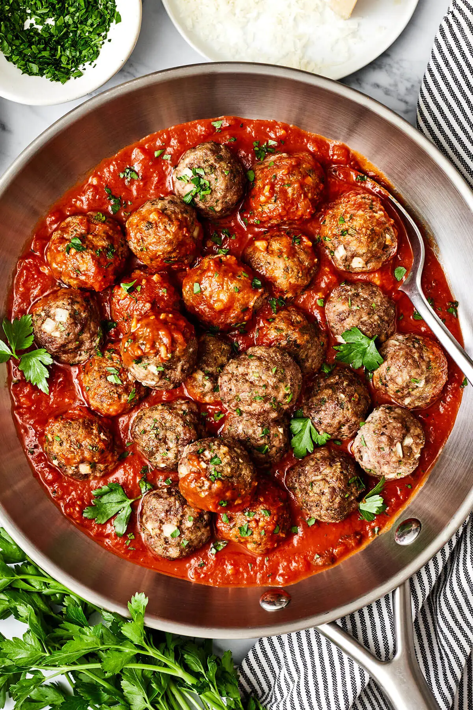

Meatballs

Description
Who doesn’t love a good meatball recipe?
This one is baked in the oven for even browning and easy cleanup, then
simmered in the best homemade marinara sauce
Ingredients:
-
Ground Meat: You can choose your favorite ground meat, but I love a
combination of ground beef and ground pork.
- Egg: Just one large egg is all you need for a binder.
-
Flour: Since I’m gluten-free, I’m using almond flour for this recipe.
And while I’m not necessarily low-carb, it does make the meatballs a
low-carb recipe!
-
Cheese: Try to use freshly grated parmesan cheese instead of the
packaged ones! It’ll make all the difference when it comes to taste.
- Aromatics: Lots of onion and garlic are a must!
-
Seasonings & Herbs: You can make your own Italian seasoning at home or
buy a blend. And for herbs, parsley will give these meatballs a fresh
touch.
Steps:
-
Mix the meatballs. Use your hands to combine the ground meat, egg,
onion, almond flour, parmesan, parsley, garlic, Italian seasoning, salt,
and pepper. Just make sure to not over-mix!
-
Scoop and roll. I typically like to use this medium cookie scoop to make
sure all my meatballs are around the same size. Then roll the mixture
into balls and place them evenly on the baking sheet.
-
Bake until browned. Bake for 20 to 23 minutes at 400°F (200°C), until
lightly browned on the outside and just cooked through. If you’d like
them a bit more browned, broil them in the last 2 to 3 minutes.
Back to Home